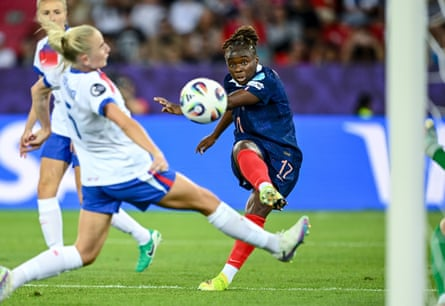

T here is no doubting that Lauren James is a generational talent. There is natural ability in abundance. She is also an example of what technically gifted women’s players can be when given elite-level coaching from a young age. She is an example of what is to come, an outlier among her peers, having benefited from her father, Nigel, being a Uefa-qualified coach with his own coaching programme that is, in his own words, “about pure ball mastery and delivery with panache, to ultimately create elite technicians of the game”.
James is effusive about her father’s input into her career, saying on the Nigel James Elite Coaching website that she is “grateful to my dad for all the time, effort and love that he has put into my football by coaching me in order to help me reach the very best level and fulfil my full potential”.
Whether in training or in a match, James stands out. In England’s open training session before their Euro 2025 send-off game against Jamaica on 29 June, the Chelsea forward was electric, despite not having played for three months because of a hamstring injury, gliding and shifting with the ball at her feet like she had never been away. Against Jamaica , it took only eight minutes after James’s introduction as a substitute for her to make an impression, providing a pinpoint cross for Alessia Russo to nod in.
Sarina Wiegman’s decision to start James against France in England’s tournament opener on Saturday was not a surprise. Indeed, many would consider it a risk worth taking because, ultimately, even a semi-fit James is a better creative outlet than many of the squad’s fully fit players. Constructing the team in a way that draws the best out of her is a logical course of action.
England desperately need James’s creative edge, her unpredictability, the fear she is able to strike into opposition players as she runs at them, her weight shifting, her movements fluid, opponents left fumbling and stumbling in her wake. Against France that dynamism and threat was evident from the off, James firing over 39 seconds into the contest, leaving France breathing a sigh of relief.
However, England have a problem regarding where to play James. The Lionesses’ midfield was overrun against France, Georgia Stanway and Keira Walsh struggling with the physicality and pressing game of their opponents, with Sakina Karchaoui particularly influential for Laurent Bonadei’s side. And with James in the No 10 role instead of Ella Toone or Grace Clinton, there was clear disruption to the Lionesses’ unit in the middle of the pitch.
Sandy Baltimore scores France’s second goal, putting the game beyond England.Photograph: Harry Langer/DeFodi Images/Shutterstock
A structured midfield is what England are used to operating with under Wiegman. James, on the other hand, is most effective when given a free role and allowed to run at defences from central or wide positions. She is less of a traditional attacking player than Beth Mead, Lauren Hemp or Chloe Kelly. As such, England are trying to fit a square peg into a round hole and it is not quite working.
How should England move forward after the defeat against France, beginning with the game against the Netherlands here in Zurich on Wednesday?
The answer could be for Wiegman to operate with a more structured midfield, deploying instead either Toone or Clinton from the start, before bringing on James, the Lionesses’ livewire, to twist and befuddle tired opposition legs later on.
Aged 23, James is clearly the future of this England side. But how to get the best out of her in the present is undeniably a tricky and pressing question. Does she start or is she a super sub? It is an unenviable dilemma for all concerned, Wiegman in particular, to wrestle with and quickly solve.